甲申日
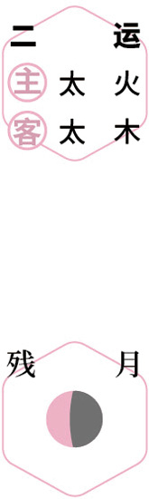
 辞芳
辞芳仲夏｜节气｜ 芒种 ｜时间｜ 六月五日至六月廿一日
今年芒种需特别注意的健康问题：恶心呕吐、痛风、手足口病
原料：樱桃、鸡蛋、醪糟（米酒）。
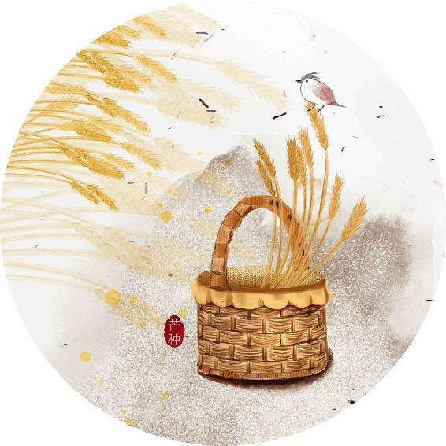
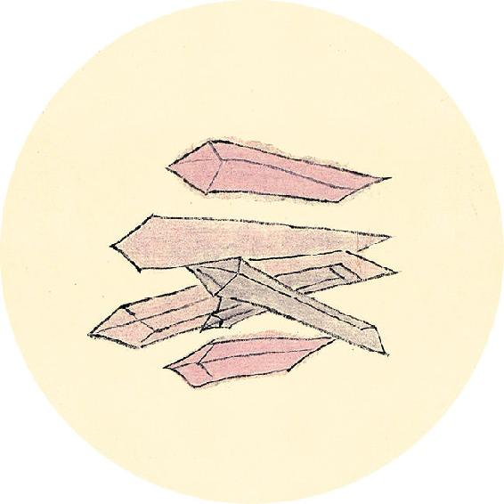
节气食方
樱桃鸡蛋汤
原料：樱桃、鸡蛋、醪糟（米酒）。
做法：
1. 樱桃用盐水泡10分钟，冲洗干净，去掉果柄。
2. 锅里放水烧开，放几勺醪糟，再放樱桃一起煮几分钟，保持大火，不要盖锅盖。
3. 鸡蛋打散入锅，用筷子迅速搅散，变成蛋花，关火起锅。
功效：补心血，滋润皮肤，调理气血亏虚、身体虚弱、脸色苍白，改善睡眠。
夫精明者，所以视万物，别白黑，审短长，以长为短，以白为黑，如是则精衰矣。
——黄帝内经·素问·脉要精微论
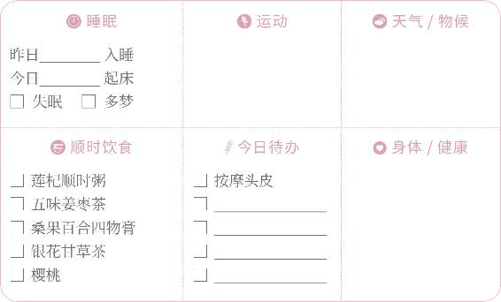

辞芳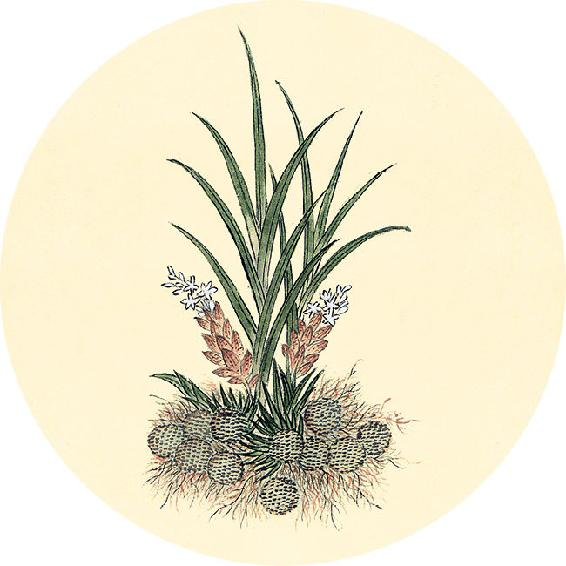
健康提示
今天是爱眼日。
现代社会无处不在的短波蓝光，具有极高的能量，能穿透晶状体直达视网膜，使光敏感细胞凋亡。
年龄越小，有害蓝光的危害越大。眼睛长期干涩，或迎风流泪，这都是视力减退的前兆。
护眼的食物：枸杞、桂圆、桑叶、菊花、苋菜。
护眼的方法（见12月27日）
【释义】人的眼睛，是用来观看万物，辨别黑白，审察长短的，如果长短不分，黑白颠倒，就说明精气衰败。（这一句是说望诊中的望目，要点是看眼睛的视觉、色觉及神采。——允斌注）
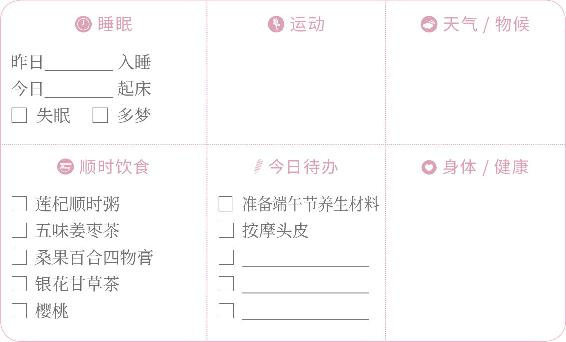
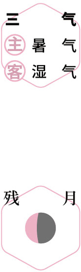
泡酒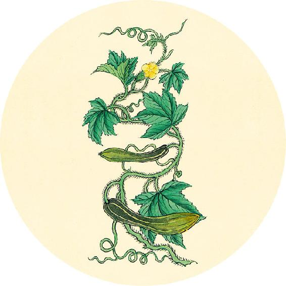
读书
“黄梅雨住，青草池塘暮。轻许天然乐两部，遥想周郎不顾。”
——宋·陈德武《清平乐》
今日“入梅”。进入梅雨季节，到7月10日出梅，共34天。梅雨时节南方阴雨连绵，今年雨水大概率会更多，湿气重。
可以常吃茯苓、白扁豆、赤小豆、荷叶、陈皮祛湿。
五藏者，中之守也。
——黄帝内经·素问·脉要精微论
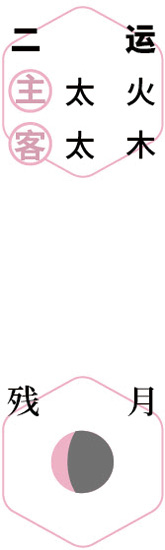
食樱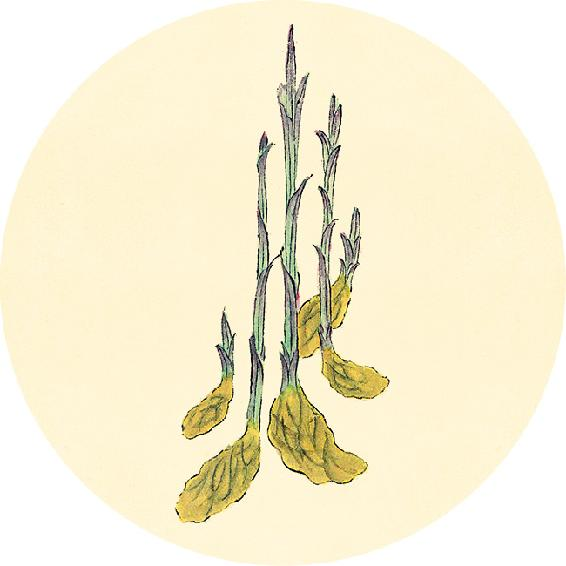
二十四节气茶养生
今年芒种节气品茶推荐：金银花茶。
金银花对于夏季病毒感染（流脑、乙脑、手足口病等）有很好的预防作用，大人小孩都能喝。
金银花清热解毒，对于各种湿热引起的皮肤病也有很好的效果，能调理肺火引起的青春痘、幼儿湿疹，预防日光性皮炎。配上甘草同饮——甘草对皮肤有修复作用，效果更佳。
金银花不仅可以饮用，还可以泡澡（做法见6月12日）。
【释义】五脏，是人身之中的藏精之所，各有其职守。（守是住所的意思，五脏是人体精气的住所。——允斌注）
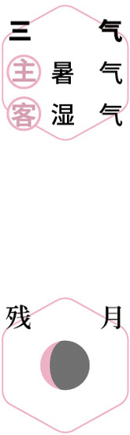
祛湿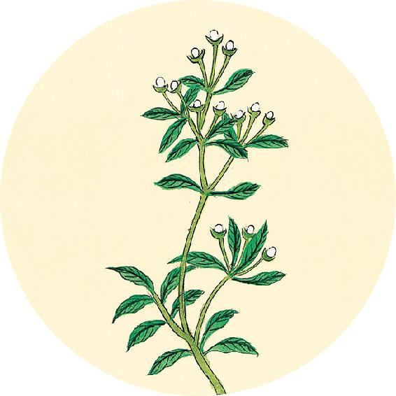
一候反思
根据性别和年龄选择回答：
中老年腰酸腿软、睡眠不好 □ 是 □ 否
3岁以上小孩夜里尿床 □ 是 □ 否
男性遗精、早泄 □ 是 □ 否
女性白带多、月经量过多 □ 是 □ 否
出现以上情况，可以继续吃一段时间核桃壳煮鸡蛋；
同时在五味姜枣茶中加入山茱萸12克。
中盛脏满，气胜伤恐者，声如从室中言，是中气之湿也。
——黄帝内经·素问·脉要精微论
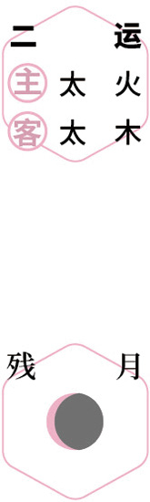
挂艾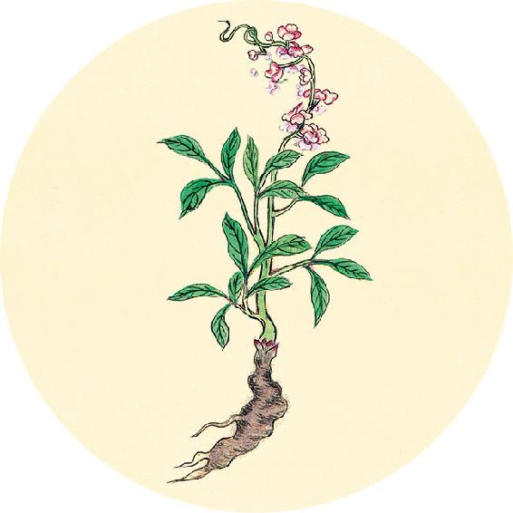
健康提示
从今天起进入农历五月。古人认为这个月五毒俱出，是“恶月”“毒月”。此时天地阳气到达顶点，各种病邪毒虫活跃，传染病容易流行，所以设端午节来祛邪，它是古代的“全民卫生节”。
端午节的传统习俗：门悬艾蒲、胸佩香包、兰汤沐浴等都有防传染病的目的，它们不是只做一天，而是要持续一整个月，最好是整个夏天。
清明节腌制的咸鸭蛋，现在拿出来吃味道正好。
【释义】腹中邪盛、脏气胀满（气机壅滞），气盛而喘，善伤于恐，说话声音重浊不清，像从内室发出的，是中气被湿邪所困了。（这一句讲的是五脏中的脾失守。——允斌注）
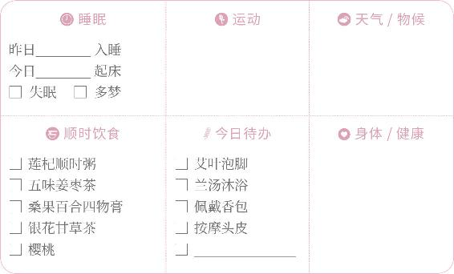
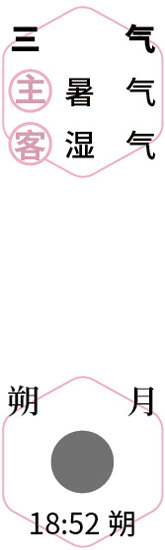
佩香囊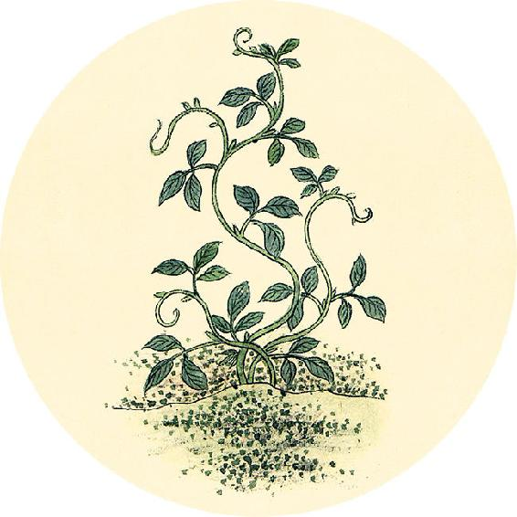
健康提示
芒种节气的养生功课：补心气、养心血。
芒种是养心的时节，宜吃樱桃补心血，服五味子补心气。
今年芒种特殊的养生要点——
今年芒种节气，阴虚内热的人要特别注意。
保养重点：肾、内分泌系统。
容易出现的问题：恶心呕吐、痛风、手足口病。
言而微，终日乃复言者，此夺气也。
——黄帝内经·素问·脉要精微论
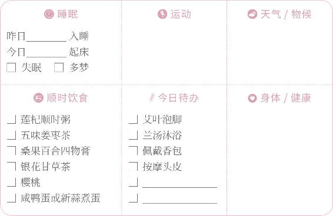
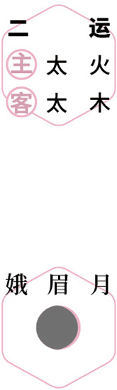
采药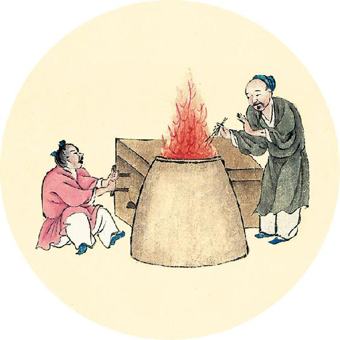
健康提示
端午节又称浴兰节。古人在这个时节要“兰汤沐浴”，用藿香、佩兰等香草煮水洗头和洗澡，可以芳香化浊祛湿，整个盛夏都适用。
可以回顾《顺时生活：2020健康日历》中的端午植物浴方、女性兰汤沐浴方、成人药浴方和老人足浴方，选择喜欢的来用。平时易发皮肤病的成人或儿童，可用金银花浴祛毒。
金银花善治各种皮肤之毒，但它药性和缓，用量要大效果才好。
【释义】说话声音低微，好半天才说出下一句，是气虚了。（这一句讲的是五脏中的肺失守。——允斌注）
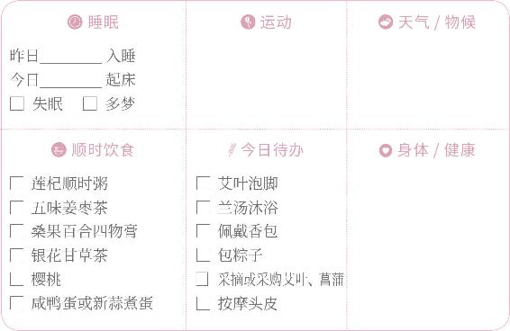
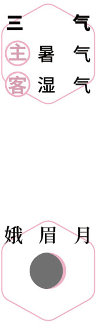
兰汤沐浴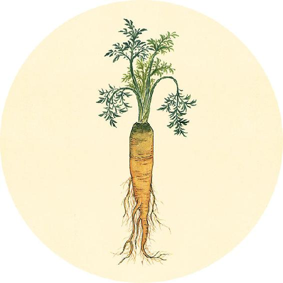
二候反思
平时身体是否有以下问题
1. 经常咽痛 □ 是 □ 否
2. 经常便秘 □ 是 □ 否
3. 血脂超标 □ 是 □ 否
4. 血糖超标 □ 是 □ 否
有任何一个答是，坚持吃（喝）一年牛蒡和罗汉果茶。
衣被（pèi，通“帔”，下裳）不敛，言语善恶，不避亲疏者，此神明之乱也。
——黄帝内经·素问·脉要精微论
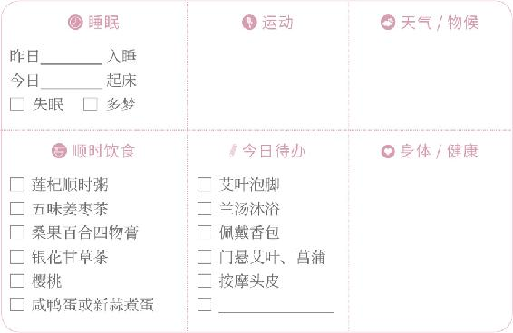
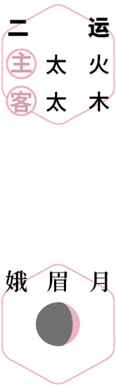
兰汤沐浴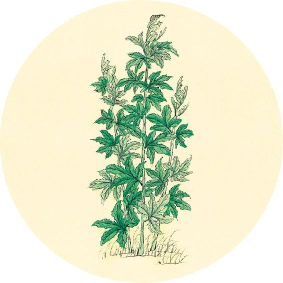
健康提示
端午节的祝福语：平安、健康、长命吉祥。
端午养生八件事，整个农历五月（午月）都可以做：
门悬艾蒲——净化空气驱蚊虫
身佩香包——香体辟汗抗病毒
艾叶泡脚——祛湿降压防湿疹
兰汤沐浴——美白调经祛头屑
涂雄黄酒——防治疱疹和疥癣
糯米香粽——补益肾气清血热
吃咸鸭蛋——滋养肾阴清肺热
新蒜煮蛋——提高身体免疫力
【释义】衣冠不整，言语错乱，不分亲疏远近的，是精神错乱了。（这一句讲的是五脏中的心失守。——允斌注）
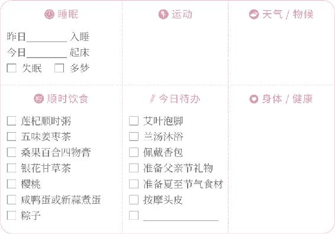
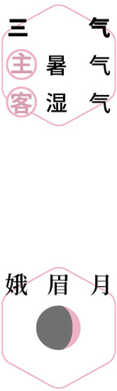
食粽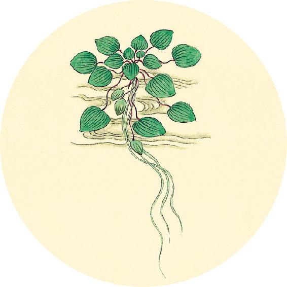
健康提示
从今天开始进入辛丑岁的第三运。
历时73天（6月15日11:16—8月27日12:30），
主运——少土；客运——少火。
一年分五个“运”，主运的五运顺序每年都是一样的。第三运的主运是“土”，这段时间雨水最多，土壤湿润，滋养万物。人体的脾胃属“土”，脾胃功能好的人，这段时间是身体生长、修复老化的好机会；脾胃功能不好的人，防病重点是防脾湿。
仓廪不藏者，是门户不要也。
——黄帝内经·素问·脉要精微论
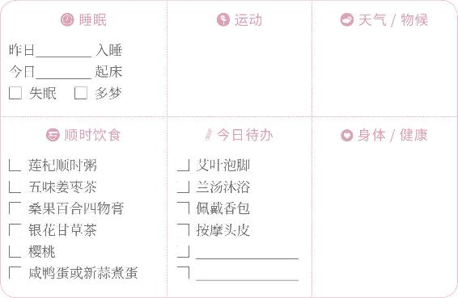
 静养
静养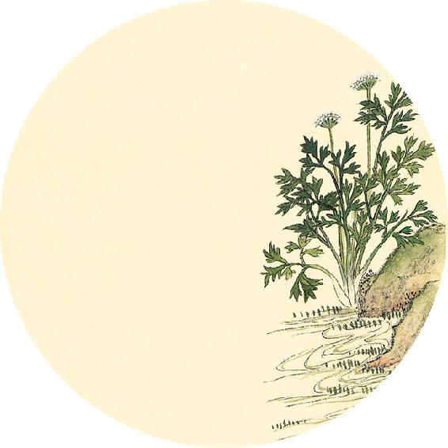
健康提示
从芒种开始进入夏天的第二个月。
本月养生关键词：修复人体老化。
上半月重点：养心阳。
下半月重点：养心阴。
从芒种到夏至，天地之间的阳气到了最旺盛的时候，人也到了生长的高峰期。如果想保持青春、延缓衰老，这就是关键时期，是一年中最宝贵的修复人体老化的机会。
【释义】肠胃不能纳藏水谷而泄泻、大便失禁，是肛门不能约束了。（这一句讲的是五脏中的脾失守。——允斌注）
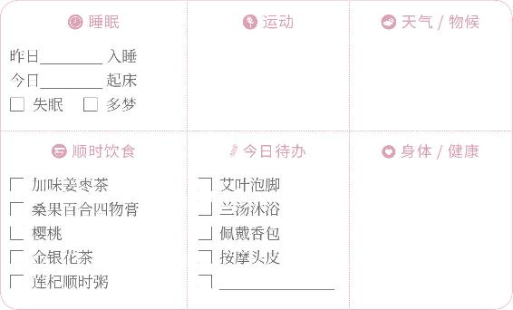
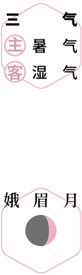
静养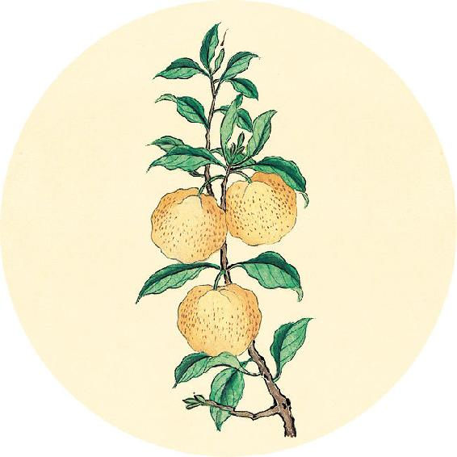
健康提示
樱桃酒
原料：樱桃1～2斤（500～1000克），用毛樱桃最佳）、粮食酒5斤（2.5升）。
做法：
1. 樱桃用盐水泡洗干净，沥干水分。
2. 放在干净无油的玻璃瓶里，把酒倒进去。
3. 十天后就可以喝了，过一两个月更好喝。
4. 每天25～50毫升，分两次喝完。
功效：调理风湿病、腰腿痛、四肢麻木，对偏瘫病人也有保健作用。
水泉不止者，是膀胱不藏也。
——黄帝内经·素问·脉要精微论
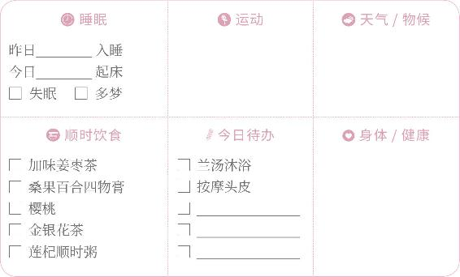
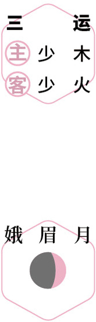
养心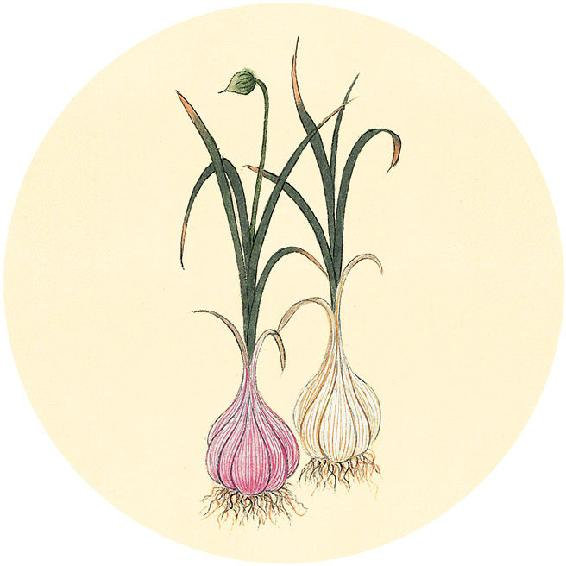
食材准备
三天后进入夏至节气。
1.桑椹食方：黑桑椹或滋阴养血桑椹膏
原料：新鲜黑桑椹、红糖。
2. 辛丑岁三气保健方：桑果百合四物膏（从小满吃到入伏前，做法见5月13日）
原料：桑椹、百合、莲子、酸枣仁、红糖。
3.五月养生方（见6月14日）
原料：艾叶、菖蒲、药浴中药、端午香包、豆沙粽、咸鸭蛋、新蒜。
4.父亲节茶礼：二子延寿茶
原料：五味子、枸杞子。
【释义】遗尿、小便失禁的，是膀胱不能闭藏了。（这一句讲的是五脏中的肾失守。——允斌注）
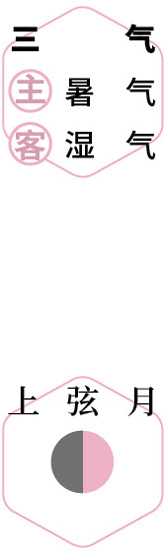
静养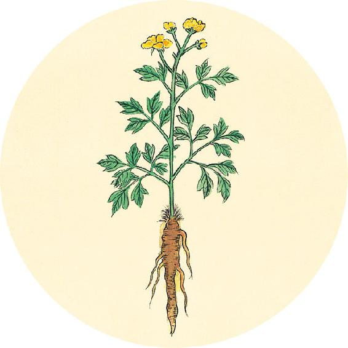
节气总结备
喝五味姜枣茶的次数________
吃樱桃食方的次数________
喝莲杞顺时粥的次数________
喝桑果百合四物膏的次数________
身体哪些方面有改善_________________________
后天夏至，夏至前后不宜劳累，这个周末宜在家静养。中老年人易被心脏问题所困扰，可饮二子延寿茶（做法见9月3日）。
得守者生，失守者死。
——黄帝内经·素问·脉要精微论

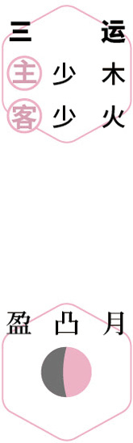
静养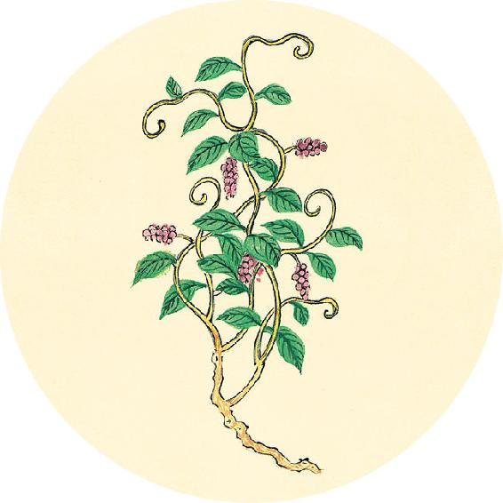
健康提示
今天是父亲节，送父亲一份健康养生礼物。
为父亲做一只调理颈椎变形的颈椎枕（做法见9月2日）。
为父亲煮一碗预防耳鸣的百莲聪耳汤（做法见11月28日）。
为父亲配一份调理心肺的清温手心贴（做法见11月1日）。
为父亲备一个午休放松的重力眼枕（做法见8月20日）。
为父亲奉一杯补肾益精的二子延寿茶（做法见9月3日）。
【释义】若五脏功能正常，得其职守者则生；若五脏精气不能固藏，失其职守者则死。
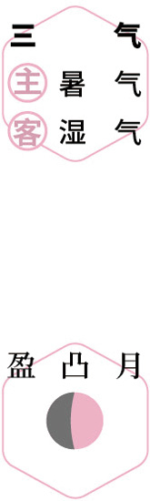
孝亲